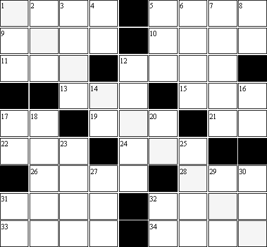

| 0 | 1 | 2 | 3 | 4 | 5 | 6 | 7 | 8 | 9 |
| _ | _ | _ | _ | _ | _ | _ | _ | _ | _ |
| _ | _ | _ | _ | _ | _ | _ | _ | _ | _ |
- The digits are consecutive and decreasing
- The digits are consecutive and increasing
- If you add S, it’s a multiple of UD
- C-across + TJ-across + TTFE
- Contains the three digits D through M
- VU times a square
- R-down times M
- The sum of the first J digits is equal to the last digit
- A prime
- The difference between each digit and the next is U
- The product of J numbers whose difference is J
- The digits sum to JG
- T more than a cube
- YU-across - K-across + R
- The digits may be rearranged to form JAY
- JF-down times QJ
- H-down - GD-down - GHE
- Has N distinct prime factors
- T-across + HYD
Down:
- GC-down - VL-down
- The digits are consecutive and increasing
- UT-across + MMT
- YY-across divided by VUA
- The sum of the highest possible Scrabble values for each digit is C
- JH-across + V
- Has U distinct prime factors, one of which is L
- UT-down with the digits reversed
- A square
- A Nth power
- A prime
- A square
- I-down times K-down times TU
- A prime
- JQ-down - VSEY
- Contains Y odd digits
- The sum of the lowest possible Scrabble values for each digit is I
- Q-down + VQ-across
- Has the same digits as GL-down
- May be represented as a Scrabble word worth J points
- A cube